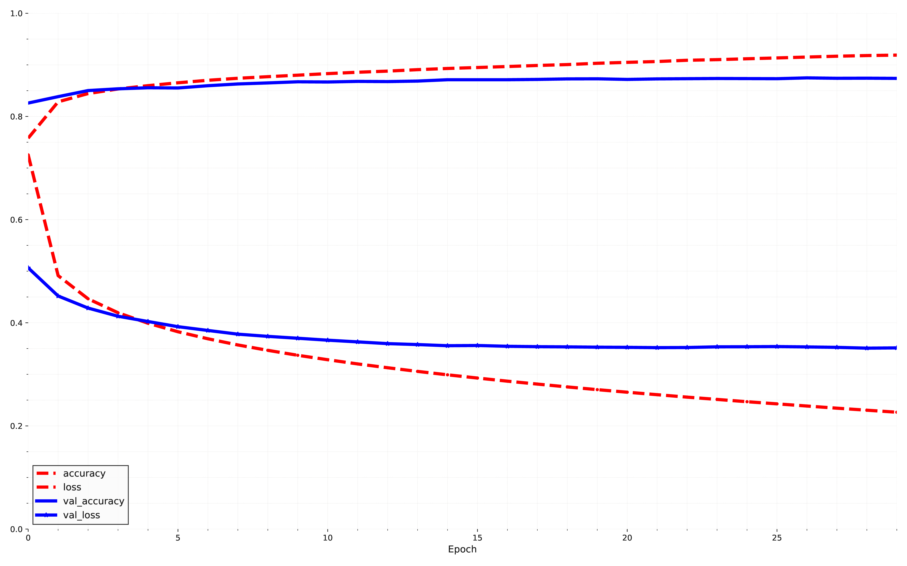

Keras is TensorFlow’s high-level deep learning APIApplication-Programming InterfaceApplication-Programming
Interface. It allows you to build, train, evaluate, and execute all sorts of neural networks. The original
Keras library was developed by
Keras used to support multiple backends, including TensorFlow
and PlaidML. but since version 2.4, Keras is
Other popular deep learning libraries include PyTorch by Facebook and JAX by Google.13
Before we begin doing anything, we need to
Using Keras to load the dataset
keras
provides utility functions to fetch and load common datasets, including MNIST, Fashion
MNIST, and a few more.
Let’s load Fashion MNIST. It’s already shuffled and split into a training set (60,000 images) and a test
set (10,000 images), but we’ll hold out the last 5,000 images from the training set for validation:
import tensorflow as tf
fashion_mnist = tf.keras.datasets.fashion_mnist.load_data()
(X_train_full, y_train_full), (X_test, y_test) = fashion_mnist
X_train, y_train = X_train_full[:-5000], y_train_full[:-5000]
X_valid, y_valid = X_train_full[-5000:], y_train_full[-5000:]
TensorFlow is usually imported as tf, and the Keras APIApplication-Programming
InterfaceApplication-Programming Interface is available via tf.keras.
When loading MNIST or Fashion MNIST
using tf.keras rather than sklearn, an important difference is that every image is represented as a
array
rather than a 1D array of size 784 with intensities are represented as integers (0 - 255) rather than
floats (0.0 - 255.0).
Let’s take a look at the shape and data type of the training set:
print("The size of the training dataset: ", X_train.shape)
print("The type of the training dataset: ", X_train.dtype)
The size of the training dataset: (11610, 8)
The type of the training dataset: float64
To make it simple, we’ll scale the pixel intensities down to the 0 - 1 range by dividing them by 255.0. This operation also converts the integer values to floats.
X_train, X_valid, X_test = X_train / 255., X_valid / 255., X_test / 255.
Using Fashion MNIST, we need the list of class names to know what we are dealing with:
class_names = ["T-shirt/top", "Trouser", "Pullover", "Dress", "Coat",
"Sandal", "Shirt", "Sneaker", "Bag", "Ankle boot"]
For example, the first image in the training set represents an ankle boot, shown in Fig. 1.6, and we can see some samples of the Fashion MNIST datasets in Fig. 1.10.
It is time to build our first ANNArtificial Neural NetworksArtificial Neural Networks. Here is
a classification MLPMulti-layer PerceptronsMulti-layer Perceptrons with two (
tf.random.set_seed(42)
model = tf.keras.Sequential()
model.add(tf.keras.layers.InputLayer(shape=[28, 28]))
model.add(tf.keras.layers.Flatten())
model.add(tf.keras.layers.Dense(300, activation="relu"))
model.add(tf.keras.layers.Dense(100, activation="relu"))
model.add(tf.keras.layers.Dense(10, activation="softmax"))
Let’s try to understand the code:
-
tf.random.set_seed(42) -
Here we set
tfrandom seed to make the results reproducible. This is to make sure the random weights of the hidden layers and the output layer will be the same every time we run our code. We could also choose to use thetf.keras.utils.set_random_seed()function, which conveniently sets the random seeds for TensorFlow. -
model = tf.keras.Sequential() -
This line creates a
Sequential model . This is the simplest kind of Keras model for ANNArtificial Neural NetworksArtificial Neural Networks, composed of a single stack of layers connected sequentially. [22] This is called the sequential APIApplication-Programming InterfaceApplication-Programming Interface. -
model.add(tf.keras.layers.InputLayer(shape=[28, 28])) -
Now we build the first layer (an Input layer) and add it to our model. We specify the input shape, which doesn’t include the batch size, only the shape of the instances. Keras needs to know the shape of the inputs so it can determine the shape of the connection weight matrix of the first hidden layer.
-
model.add(tf.keras.layers.Flatten()) -
Here we add a Flatten layer. Its role is to convert each input image into a 1D array
For example, if the layer receives a batch of shape , it will reshape it to . In other words, if it receives input data
X, it computesX.reshape(-1, 784). This layer doesn’t have any parameters as it’s just there to do some simple pre-processing. -
model.add(tf.keras.layers.Dense(300, activation="relu")) -
We add a Dense hidden layer with 300 neurons. It will use the ReLU activation function. Each Dense layer manages its own weight matrix, containing all the connection weights between the neurons and their inputs. It also manages a vector of bias terms. [23] This is one per neuron.
-
model.add(tf.keras.layers.Dense(100, activation="relu")) -
We add a second Dense hidden layer with 100 neurons, also using the ReLU activation function.
-
model.add(tf.keras.layers.Dense(10, activation="softmax")) -
We add a Dense output layer with 10 neurons, [24] one per class. using the softmax activation function as the classes are exclusive.
Writing activation="relu" is same as activation=tf.keras.activations.relu. [25]
Other activation
functions are available in tf.keras.activations package.
Instead of adding the layers one by one as we just did, it’s often more convenient to pass a list of layers
when creating the Sequential model. You can also drop the Input layer and instead specify the
input_shape
in the first layer:
tf.keras.backend.clear_session()
tf.random.set_seed(42)
model = tf.keras.Sequential([
tf.keras.layers.Flatten(input([28, 28])),
tf.keras.layers.Dense(300, activation="relu"),
tf.keras.layers.Dense(100, activation="relu"),
tf.keras.layers.Dense(10, activation="softmax")
])
The model’s summary() method displays all the model’s layers, including each layer’s name, which is
automatically generated, its output shape, and its number of parameters. The summary ends with the
total number of parameters, including
tf.keras.utils.plot_model(model, imagePath+"mnist-_model.pdf", show_shapes=True)
Dense layers often have a lot of parameters.
For example, the first hidden layer has connection weights, with 300 bias terms, which adds up to 235,500 parameters.
This gives the model quite a lot of flexibility to fit the training data, but it also means the model runs the risk of over-fitting, especially when we do NOT have a lot of training data.
Each layer in a model must have a unique name. [26]
For example, we can call a layer dense_2. We can set
the layer names explicitly using the constructor’s name argument, but generally it’s simpler to let Keras
name the layers automatically, as we just did. Keras takes the layer’s class name and converts it to
snake case. [27]
i.e., a layer from the MyCoolLayer class is named my_cool_layer by default. Keras also
ensures that the name is globally unique, even across models, by appending an index if needed, as in
dense_2
.
This naming scheme makes it possible to merge models easily without getting name conflicts.
All global state managed by Keras is stored in a Keras session, which you can clear using
tf.keras.backend.clear_session()
.
We can easily get a model’s list of layers using the layers attribute, or use the get_layer() method to
access a layer by name:
print(model.layers)
[<Flatten name=flatten, built=True>,
<Dense name=dense, built=True>,
<Dense name=dense_1, built=True>,
<Dense name=dense_2, built=True>]
All the parameters of a layer can be accessed using its get_weights() and set_weights() methods.
For a Dense layer, this includes both the connection weights and the bias terms:
hidden1 = model.layers[1]
weights, biases = hidden1.get_weights()
print(weights)
[[-0.05415904 0.00010975 -0.00299759 ... 0.05136904 0.0740822
0.06472497]
[ 0.05510217 -0.01353022 -0.00363479 ... 0.07100512 -0.04926914
-0.02905609]
[-0.07024231 0.02524897 -0.04784295 ... -0.0521326 0.05084455
-0.06636713]
...
[ 0.0067075 -0.00256791 -0.064556 ... 0.05266081 0.03520959
-0.02309504]
[ 0.05826265 -0.0361187 -0.04228947 ... 0.05612285 -0.03179397
0.06843598]
[ 0.06636336 -0.00123435 -0.00247347 ... 0.01809192 0.03434542
0.00700523]]
Please observe that the Dense layer initialized the connection weights randomly.
This is needed to break symmetry.
The biases were initialized to zero (
print(biases)
[0. 0. 0. 0. 0. 0. 0. 0. 0. 0. 0. 0. 0. 0. 0. 0. 0. 0. 0. 0. 0. 0. 0. 0.
0. 0. 0. 0. 0. 0. 0. 0. 0. 0. 0. 0. 0. 0. 0. 0. 0. 0. 0. 0. 0. 0. 0. 0.
0. 0. 0. 0. 0. 0. 0. 0. 0. 0. 0. 0. 0. 0. 0. 0. 0. 0. 0. 0. 0. 0. 0. 0.
0. 0. 0. 0. 0. 0. 0. 0. 0. 0. 0. 0. 0. 0. 0. 0. 0. 0. 0. 0. 0. 0. 0. 0.
0. 0. 0. 0. 0. 0. 0. 0. 0. 0. 0. 0. 0. 0. 0. 0. 0. 0. 0. 0. 0. 0. 0. 0.
0. 0. 0. 0. 0. 0. 0. 0. 0. 0. 0. 0. 0. 0. 0. 0. 0. 0. 0. 0. 0. 0. 0. 0.
0. 0. 0. 0. 0. 0. 0. 0. 0. 0. 0. 0. 0. 0. 0. 0. 0. 0. 0. 0. 0. 0. 0. 0.
0. 0. 0. 0. 0. 0. 0. 0. 0. 0. 0. 0. 0. 0. 0. 0. 0. 0. 0. 0. 0. 0. 0. 0.
0. 0. 0. 0. 0. 0. 0. 0. 0. 0. 0. 0. 0. 0. 0. 0. 0. 0. 0. 0. 0. 0. 0. 0.
0. 0. 0. 0. 0. 0. 0. 0. 0. 0. 0. 0. 0. 0. 0. 0. 0. 0. 0. 0. 0. 0. 0. 0.
0. 0. 0. 0. 0. 0. 0. 0. 0. 0. 0. 0. 0. 0. 0. 0. 0. 0. 0. 0. 0. 0. 0. 0.
0. 0. 0. 0. 0. 0. 0. 0. 0. 0. 0. 0. 0. 0. 0. 0. 0. 0. 0. 0. 0. 0. 0. 0.
0. 0. 0. 0. 0. 0. 0. 0. 0. 0. 0. 0.]
If we want to use a different initialization method, we can set kernel_initializer or alternatively, we
can use bias_initializer when creating the layer.
The shape of the weight matrix depends on the
number of inputs, which is why we specified the input_shape when creating the model. If you do not
specify the input shape, it’s also fine as Keras will simply wait until it knows the input shape before it
actually builds the model parameters.
This will happen either when you feed it some data [28]
such as during training., or when we call its
build()
method. Until the model parameters are built, we will NOT be able to do certain things,
such as display the model summary or save the model.
So, if we know the input shape when creating the model, it is best to specify it.
Model Compiling
After a model is created, we need to call its compile() method to specify the loss function and the
optimizer to use, or you can specify a list of extra metrics to compute during training and
evaluation:
model.compile(loss="sparse_categorical_crossentropy",
optimizer="sgd",
metrics=["accuracy"])
Before continuing, we need to explain what is going on here.
We use the sparse_categorical_crossentropy loss because we have sparse labels, [29]
i.e., for each
instance, there is just a target class index, from 0 to 9 in this case. and the classes are exclusive.
-
If we had one target probability per class for each instance (such as one-hot vectors, e.g., [0., 0., 0., 1., 0., 0., 0., 0., 0., 0.] to represent class 3), then we would need to use the
categorical_crossentropyloss instead. -
If we were doing binary classification or multi-label binary classification, then we would use the
sigmoid activation function in the output layer instead of the softmax activation function, and we would use thebinary_crossentropyloss.
Regarding the optimiser, sgd means that we will train the model using
Finally, as this is a classifier, it’s useful to measure its accuracy during training and evaluation, which is
why we set metrics=["accuracy"].
Training and Evaluating Models
Now the model is ready to be trained. For this we simply need to call its fit() method:
history = model.fit(X_train, y_train, epochs=30,
validation_data=(X_valid, y_valid))
We pass it the input features (X_train) and the target classes (y_train), as well as the number of
epochs to train. [31]
or else it would default to just 1, which would definitely not be enough to converge to a
good solution.
We also pass a validation set which is optional. Keras will measure the loss and the extra metrics on this set at the end of each epoch, which is very useful to see how well the model really performs.
If the performance on the training set is much better than on the validation set, the model is probably overfitting the training set, or there is a bug, such as a data mismatch between the training set and the validation set.
And that’s it.
The ANNArtificial Neural NetworksArtificial Neural Networks is trained. At each epoch during training, Keras displays the number of mini-batches processed so far on the left side of the progress bar. The batch size is 32 by default, and since the training set has 55,000 images, the model goes through 1,719 batches per epoch: 1,718 of size 32, and 1 of size 24.
After the progress bar, we can see the mean training time per sample, and the loss and accuracy [32] or any other extra metrics you asked for. on both the training set and the validation set and notice that the training loss went down, which is a good sign, and the validation accuracy reached 88.94% after 30 epochs.
That’s slightly below the training accuracy, so there is a little bit of overfitting going on, but NOT a huge amount.
If the training set was very skewed, with some classes being overrepresented and others
underrepresented, it would be useful to set the class_weight argument when calling the fit()
method, to give a larger weight to underrepresented classes and a lower weight to overrepresented
classes.
These weights would be used by Keras when computing the loss. If we need per-instance weights, set
the sample_weight argument. If both class_weight and sample_weight are provided, then Keras
multiplies them. Per-instance weights could be useful, for example, if some instances were labeled by
experts while others were labeled using a crowdsourcing platform: you might want to give more weight
to the former.
We can also provide sample weights [33]
but not class weights. for the validation set by adding them as
a third item in the validation_data tuple. The fit() method returns a History object
containing the training parameters (history.params), the list of epochs it went through
(history.epoch), and most importantly a dictionary (history.history) containing the loss and extra
metrics it measured at the end of each epoch on the training set and on the validation set, if
any.
print(history.params)
print(history.epoch)
{'verbose': 'auto', 'epochs': 30, 'steps': 1719}
[0, 1, 2, 3, 4, 5, 6, 7, 8, 9, 10, 11, 12, 13, 14, 15, 16, 17, 18, 19, 20, 21, 22, 23, 24, 25, 26, 27, 28, 29]
If we use this dictionary to create a Pandas DataFrame and call its plot() method, you get the
learning curves shown in Fig. 1.13.

You can see that both the training accuracy and the validation accuracy steadily increase during training, while the training loss and the validation loss decrease.
This is good.
The validation curves are relatively close to each other at first, but they get further apart over time, which shows that there’s a little bit of overfitting. In this particular case, the model looks like it performed better on the validation set than on the training set at the beginning of training, but that’s not actually the case.
The validation error is calculated at the end of each epoch, while the training error is computed using a
We can tell that the model has NOT quite converged yet, as the validation loss is still going
down, so it would be better to continue training. This is as simple as calling the fit()
method again, as Keras just continues training where it left off: you should be able to reach
about 89.8% validation accuracy, while the training accuracy will continue to rise up to
100%.
This is not always the case.
If you are not satisfied with the performance of your model, it is a good idea to back and tune the hyperparameters.
- 1.
- First check the learning rate ().
- 2.
- If that doesn’t help, try another optimizer, and always retune the learning rate after changing any hyperparameter,
- 3.
- If the performance is still not great, try tuning model hyperparameters such as the number of layers, the number of neurons per layer, and the types of activation functions to use for each hidden layer.
You can also try tuning other hyperparameters, such as the batch size (it can be set in the fit()
method using the batch_size argument, which defaults to 32).
Once you are satisfied with your model’s validation accuracy, you should evaluate it on the test set to
estimate the generalization error before you deploy the model to production. You can easily do this
using the evaluate() method.
It also supports several other arguments, such as batch_size and sample_weight.
It is common to get slightly lower performance on the test set than on the validation set, as hyperparameters are tuned on the validation set, NOT the test set. However, in this example, we did not do any hyperparameter tuning, so the lower accuracy is just bad luck.
Resist the temptation to tweak the hyperparameters on the test set, or else your estimate of the generalization error will be too optimistic.
Using Model to Make Predictions
It is time to use the model’s predict() method to make predictions on new instances. As
we don’t have actual new instances, we’ll just use the first three (
X_new = X_test[:3]
y_proba = model.predict(X_new)
print(y_proba.round(2))
[[0. 0. 0. 0. 0. 0.12 0. 0.01 0. 0.87]
[0. 0. 1. 0. 0. 0. 0. 0. 0. 0. ]
[0. 1. 0. 0. 0. 0. 0. 0. 0. 0. ]]
For each instance the model estimates one probability per class, from class 0 to class 9. This is similar
to the output of the predict_proba() method in sklearn classifiers.
For example, for the first image it estimates that the probability of class 9 (ankle boot) is 87%, the probability of class 7 (sneaker) is 1%, the probability of class 5 (sandal) is 12%, and the probabilities of the other classes are negligible.
In other words, it is highly confident that the first image is footwear, most likely ankle boots but
possibly sneakers or sandals. If you only care about the class with the highest estimated probability,
[34]
Even if that probability is quite low. then we can use the argmax() method to get the highest
probability class index for each instance:
y_pred = y_proba.argmax(axis=-1)
print(y_pred)
[9 2 1]
Here, the classifier actually classified all three images correctly, where these images are shown in Fig. 1.14.
Instead of classifying categories, lets try to estimate a tf.keras.
Using the sequential APIApplication-Programming InterfaceApplication-Programming Interface to
build, train, evaluate, and use a regression MLP is quite similar to what we did for classification. The
primary differences in the following code example are the fact that the output layer has a single neuron
[35]
since we only want to predict a single value. and it uses no activation function, the loss function is
the MSEMean Square ErrorMean Square Error, the metric is RMSERoot-Mean Square
ErrorRoot-Mean Square Error, and we’re using an Adam optimizer like sklearns MLPRegressor
did.
In addition, in this example we don’t need a Flatten layer, and instead we’re using a Normalization
layer as the first layer: it does the same thing as sklearns StandardScaler, but it must be fitted to the
training data using its adapt() method before you call the model’s fit() method. Let’s look at the
code:
housing = fetch_california_housing()
X_train_full, X_test, y_train_full, y_test = train_test_split(
housing.data, housing.target, random_state=42)
X_train, X_valid, y_train, y_valid = train_test_split(
X_train_full, y_train_full, random_state=42)
tf.random.set_seed(42)
norm_layer = tf.keras.layers.Normalization(input_shape=X_train.shape[1:])
model = tf.keras.Sequential([
norm_layer,
tf.keras.layers.Dense(50, activation="relu"),
tf.keras.layers.Dense(50, activation="relu"),
tf.keras.layers.Dense(50, activation="relu"),
tf.keras.layers.Dense(1)
])
optimizer = tf.keras.optimizers.Adam(learning_rate=1e-3)
model.compile(loss="mse", optimizer=optimizer, metrics=["RootMeanSquaredError"])
norm_layer.adapt(X_train)
history = model.fit(X_train, y_train, epochs=20,
validation_data=(X_valid, y_valid))
mse_test, rmse_test = model.evaluate(X_test, y_test)
X_new = X_test[:3]
y_pred = model.predict(X_new)
As we can see, the sequential API is quite clean and straightforward. However, although Sequential models are extremely common, it is sometimes useful to build neural networks with more complex topologies, or with multiple inputs or outputs. For this purpose, Keras offers the functional API.
normalization_layer = tf.keras.layers.Normalization()
hidden_layer1 = tf.keras.layers.Dense(30, activation="relu")
hidden_layer2 = tf.keras.layers.Dense(30, activation="relu")
concat_layer = tf.keras.layers.Concatenate()
output_layer = tf.keras.layers.Dense(1)
input_ = tf.keras.layers.Input(shape=X_train.shape[1:])
normalized = normalization_layer(input_)
hidden1 = hidden_layer1(normalized)
hidden2 = hidden_layer2(hidden1)
concat = concat_layer([normalized, hidden2])
output = output_layer(concat)
model = tf.keras.Model(inputs=[input_], outputs=[output])
input_wide = tf.keras.layers.Input(shape=[5]) # features 0 to 4
input_deep = tf.keras.layers.Input(shape=[6]) # features 2 to 7
norm_layer_wide = tf.keras.layers.Normalization()
norm_layer_deep = tf.keras.layers.Normalization()
norm_wide = norm_layer_wide(input_wide)
norm_deep = norm_layer_deep(input_deep)
hidden1 = tf.keras.layers.Dense(30, activation="relu")(norm_deep)
hidden2 = tf.keras.layers.Dense(30, activation="relu")(hidden1)
concat = tf.keras.layers.concatenate([norm_wide, hidden2])
output = tf.keras.layers.Dense(1)(concat)
model = tf.keras.Model(inputs=[input_wide, input_deep], outputs=[output])
optimizer = tf.keras.optimizers.Adam(learning_rate=1e-3)
model.compile(loss="mse", optimizer=optimizer, metrics=["RootMeanSquaredError"])
X_train_wide, X_train_deep = X_train[:, :5], X_train[:, 2:]
X_valid_wide, X_valid_deep = X_valid[:, :5], X_valid[:, 2:]
X_test_wide, X_test_deep = X_test[:, :5], X_test[:, 2:]
X_new_wide, X_new_deep = X_test_wide[:3], X_test_deep[:3]
norm_layer_wide.adapt(X_train_wide)
norm_layer_deep.adapt(X_train_deep)
history = model.fit((X_train_wide, X_train_deep), y_train, epochs=20,
validation_data=((X_valid_wide, X_valid_deep), y_valid))
mse_test = model.evaluate((X_test_wide, X_test_deep), y_test)
y_pred = model.predict((X_new_wide, X_new_deep))
input_wide = tf.keras.layers.Input(shape=[5]) # features 0 to 4
input_deep = tf.keras.layers.Input(shape=[6]) # features 2 to 7
norm_layer_wide = tf.keras.layers.Normalization()
norm_layer_deep = tf.keras.layers.Normalization()
norm_wide = norm_layer_wide(input_wide)
norm_deep = norm_layer_deep(input_deep)
hidden1 = tf.keras.layers.Dense(30, activation="relu")(norm_deep)
hidden2 = tf.keras.layers.Dense(30, activation="relu")(hidden1)
concat = tf.keras.layers.concatenate([norm_wide, hidden2])
output = tf.keras.layers.Dense(1)(concat)
aux_output = tf.keras.layers.Dense(1)(hidden2)
model = tf.keras.Model(inputs=[input_wide, input_deep],
outputs=[output, aux_output])
optimizer = tf.keras.optimizers.Adam(learning_rate=1e-3)
model.compile(loss=("mse", "mse"), loss_weights=(0.9, 0.1), optimizer=optimizer,
metrics=["RootMeanSquaredError", "RootMeanSquaredError"])
norm_layer_wide.adapt(X_train_wide)
norm_layer_deep.adapt(X_train_deep)
history = model.fit(
(X_train_wide, X_train_deep), (y_train, y_train), epochs=20,
validation_data=((X_valid_wide, X_valid_deep), (y_valid, y_valid))
)
eval_results = model.evaluate((X_test_wide, X_test_deep), (y_test, y_test))
weighted_sum_of_losses, main_loss, aux_loss = eval_results
y_pred_main, y_pred_aux = model.predict((X_new_wide, X_new_deep))
y_pred_tuple = model.predict((X_new_wide, X_new_deep))
y_pred = dict(zip(model.output_names, y_pred_tuple))
import shutil
shutil.rmtree("my_keras_model", ignore_errors=True)
model.export("my_keras_model")